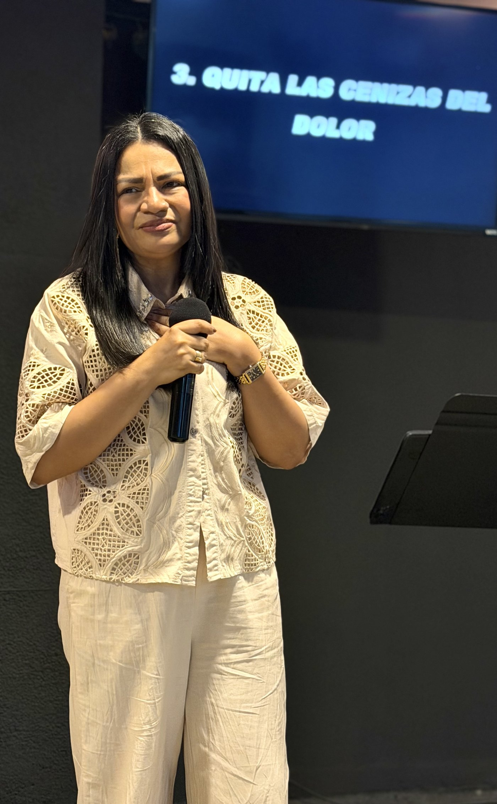

Más de 15 años de asignación pastoral y profética, activando avance, restauración y una vida de altar en Colombia y fuera de ella.

Nací hace 50 años en la ciudad de Barranquilla. Soy una mujer apasionada por la presencia de Dios y por el conocimiento de Él. Desde niña sentía la atracción por lo espiritual y por la oración — Dios me llamó a los 9 años, y esa es una historia larga de fidelidad.
He entendido que todo propósito en Dios tiene que ser capacitado e instruido. A lo largo de los años Él me ha ido formando a través de diferentes procesos que entendí eran mi zona de entrenamiento, permitiéndome conocer el mundo espiritual y cómo opera — algo que sigo desarrollando día a día.
He estado en radio, he sido maestra en el Centro de Entrenamiento La Cosecha y, por su gracia, he viajado a muchas ciudades y pueblos de Colombia y fuera del país impartiendo una palabra de activación y liberación. Desde hace aproximadamente 10 años estoy dedicada al cien por ciento al servicio del Señor: seminarios, congresos de mujeres, actividades sociales y formación en guerra espiritual.
"Esta soy yo, que sé que no soy yo, sino Su infinita gracia en mí."
Casada hace 16 años con el Pastor Tirso Zárate Barrios, mamá de Laura y Josué, y abuela de Samuel Ellioth. Su hogar es, en sus propias palabras, otro altar de vida.
Dios la llama. Desde niña siente una fuerte atracción por lo espiritual y por la oración — el inicio de una historia de formación que continúa hasta hoy.
Años de instrucción y entrenamiento en distintos procesos. Sirve en radio y como maestra en el Centro de Entrenamiento La Cosecha, profundizando en el conocimiento del mundo espiritual.
Se dedica al 100% al servicio del Señor: seminarios, congresos proféticos y de mujeres, actividades sociales y capacitación en guerra espiritual, en Colombia y fuera de ella.
Bajo la convicción de que "de gracia recibimos, de gracia damos", desarrolla 5 talleres virtuales en un año — Lazos del alma, Derribando argumentos mentales, El poder de la intercesión y Entrenados para la guerra — conectando a personas de 5 países.
Más de 15 años de asignación pastoral y profética. Ministra seminarios, congresos y conferencias, con un ministerio enfocado en la activación, la conexión con Dios y la restauración a través de una vida de altar.
Fundadora de estos devocionales, pensados para acompañar a la persona en un encuentro diario y constante con la presencia de Dios.
DevocionalesConferencias con enfoque en depresión y ansiedad, entregando herramientas bíblicas para vencer y tener autoridad sobre lo ya vencido.
ConferenciasSu pasión central: ministrar la Palabra, capacitar a otros y ver personas libres del poder del enemigo, a través de seminarios y formación continua.
FormaciónLazos del alma · Derribando argumentos mentales · El poder de la intercesión · Entrenados para la guerra — 5 talleres que conectaron a personas de 5 países.
Comunidad"He vivido batallas mentales que solo el poder del Espíritu Santo me ha ayudado a vencer — incluyendo momentos muy oscuros de depresión, ansiedad y pensamientos suicidas. Dios me ha entregado herramientas que me han ayudado a estar de pie, y eso es lo que quiero impartir: entregar a las personas las herramientas bíblicas para vencer y tener autoridad sobre lo vencido. Mi pasión es la guerra espiritual, ministrar la Palabra de Dios y ver personas libres del poder del enemigo."
Angela BornacheraSu labor nació y sigue firmemente arraigada en Colombia — con paso por radio, el Centro de Entrenamiento La Cosecha y decenas de ciudades y pueblos del país — y desde allí se ha extendido a seminarios, congresos proféticos y de mujeres fuera de sus fronteras.
Tres formas de conocer su ministerio: un devocional de "Mi cita con Dios", una prédica y una entrevista para conocer su historia.
Mi cita con Dios — devocional
Una prédica
Entrevista — conoce su historia
Lo que la define en cinco palabras: quién es, qué enseña, con quién camina y hasta dónde ha llegado — dentro y fuera de Colombia.
Cercanía pastoral y autoridad profética, formadas durante más de 15 años, respaldadas por un testimonio propio de victoria sobre sus propias batallas mentales.
Quién esUn archivo vivo de enseñanza: los devocionales "Mi cita con Dios", las conferencias de Batallas Mentales y la formación continua en guerra espiritual.
Qué enseñaTalleres virtuales que conectaron a personas de 5 países en plena pandemia, y una comunidad de discipulado que sigue activa y en crecimiento.
Con quién caminaPresencia en radio, en el Centro de Entrenamiento La Cosecha y en decenas de ciudades y pueblos de Colombia a través de seminarios, congresos y actividades sociales.
En ColombiaSeminarios y congresos proféticos y de mujeres fuera de Colombia, con una audiencia que la sigue desde distintos países en Instagram y YouTube.
Fuera de ColombiaPara invitaciones a predicar, seminarios o alianzas, escríbele por WhatsApp, Instagram o YouTube.